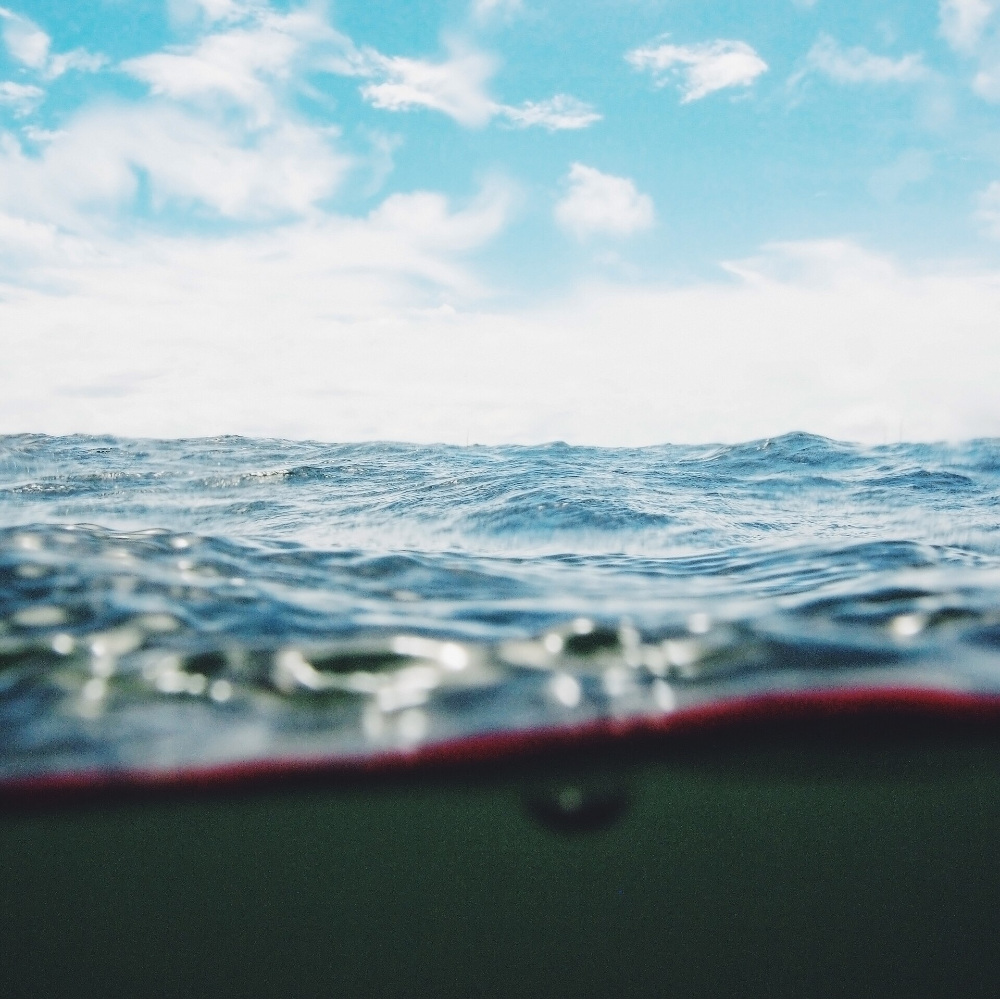

–
дней

Киров → Москва → Стамбул → Панама → Тамариндо → обратно. 12 дней, всё под рукой.
до отправления поезда №131 Киров-Пасс → Москва, 30 октября 2026, 07:27
Все рейсы, поезда, пересадки, инструкции по стыковкам и границам — по часам.
Occidental Tamarindo: территория, что вокруг, карта района и окрестностей.
Питание по датам, sodas и must-try, вода — и список продуктов в поезд.
Салат из фасоли, кукурузы и сухариков + колбаса. Что, сколько и когда купить.
Чек-листы по всем категориям с сохранением отметок и прогрессом.
Задачи перед выездом: отметки, свои пункты, порядок и разделы — редактируется.
Что привезти, где и когда покупать с учётом лимитов багажа, разведка цен.
Законы Коста-Рики, штрафы, границы, экстренные номера.
Деньги без потерь, транспорт, связь, погода в ноябре, что делать в дождь.
Билеты и бронирования в PDF — страница защищена паролем, файлы зашифрованы.
Отмечай галочками — прогресс сохраняется в браузере. Пункты можно добавлять и править на странице «Дела».
Первые два пункта — до всего остального. Вещи — в чек-листе сборов.
Билеты на все 8 авиасегментов и 2 поезда, отель Occidental, паспорта и PDF-документы — в разделе «Документы».
911 — полиция, скорая, пожарные (во всех странах маршрута).
Туристическая полиция КР: 1192.
Посольство РФ в Коста-Рике: +506 2280-0066.
Билеты отдельные (5 PNR) — багаж между авиакомпаниями не пересылается. В Панаме и SJO: забрать ленту → таможня/выход в общий зал → регистрация заново. Подробности — Инструкция C.
Оплата картой — всегда в CRC, не в USD (иначе теряешь 5–10% на DCC). Наличные снимай крупными суммами: комиссия фиксированная. Подробнее — лайфхаки.
Обратные течения — главная опасность. Плавай только у флагов: 🟢 можно, 🟡 осторожно, 🔴 нельзя. Попал в течение — не борись, плыви параллельно берегу.
Самый дождливый месяц, но дождь обычно 1–2 часа после обеда (14:00–16:00). Утро — солнце, вечер — снова солнце. Зато цены минимальные, зелёная страна как на обложке и старт сезона китов.